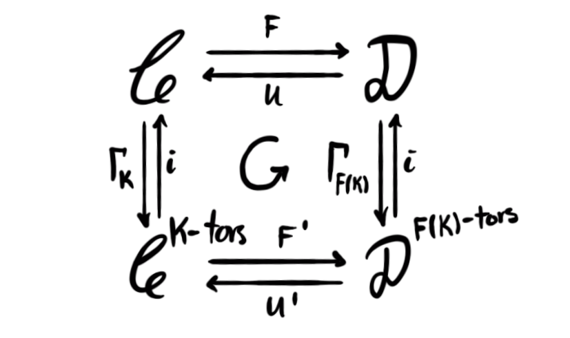

Hi, long time no see. I used to be very persistent about writing at least one blog-post each month, but as one can see, I have taken a break for a couple months due to vacation and increased teaching and lecturing duties at NTNU. Incidentally it coincided exactly with the 2 year mark of having posted at least once a month, often more. I have been writing stuff, but not anything worth posting. Anyway, I wanted to get into the flow of posting once a month again, as it really helps me with learning and focusing on certain topics Im interested in, and I have been contacted by several people who find the posts illuminating and helpful for understanding a topic. This post is a long time coming, as I started writing it in March… Anyway, lets get to some mathematics, but before that I want to mention that the cover image is generated by Dall-E 2 using the prompt “periodic derived category painting”.
As I have briefly mentioned previously, my research project for my PhD focuses on finding exotic algebraic models in homotopy theory. These are equivalences of homotopy $k$-categories
$$ h_k\mathcal{C} \simeq h_k D(\mathcal{A}), $$
where $\mathcal{C}$ is some symmetric monoidal stable $\infty$-category and $\mathcal{A}$ is an abelian category, which can not be lifted to an equivalence of $\infty$-categories. Last fall there was an important preprint regarding such exotic algebraic models appearing on the ArXiv, that proved a theorem called Franke’s algebraicity theorem. This theorem produces an exotic algebraic model given some nice functor $\mathcal{C}\longrightarrow \mathcal{A}$. We won’t cover this theorem in this post, but we will introduce some parts needed to understand it, as well as proving a certain cool result that will become important later. The concept we need to introduce is the periodic derived category of $\mathcal{A}$, denoted $D^{per}(\mathcal{A})$. After that we will look at torsion objects and finally present a proof of the fact that that these two concepts play nicely together. But, before that, we state a theorem we will need throughout the entire post.
My advisors favourite theorem: Let $F\colon \mathcal{C}\leftrightarrows \mathcal{D}\colon U$ be a monoidal adjunction between two presentable symmetric monoidal stable $\infty$-categories. If the adjunction satisfies the following
- $U$ is conservative
- $U$ preserves colimits
- We have a projection formula: $U(X)\otimes Y \simeq U(X\otimes F(Y))$ for all objects $X\in \mathcal{D}$, $Y\in \mathcal{C}$
then there is an equivalence $D\simeq Mod_{\mathcal{C}}(U(1_\mathcal{D}))$. The category $Mod_{\mathcal{C}}(U(1_\mathcal{D}))$ is the category of modules internal to $\mathcal{C}$ over $U(1)$, which is a ring object as $U$ is lax monoidal. We will get back to this theorem later in the post, but for now just let it simmer in the back of your head.
The periodic derived category
There are two main ways of constructing the periodic derived category of our abelian category $\mathcal{A}$, one uses so-called differential objects, and one uses periodic chain complexes. The latter uses the construction we used for the derived $\infty$-category, witch we discussed a couple posts ago. As we are somewhat familiar with this, we focus first on this construction.
Recall from the post about the derived $\infty$-category that we can produce a category $K_{\infty}(\mathcal{A})$ called the $\infty$-category of chain complexes in $\mathcal{A}$. We constructed this by taking the simplicial nerve of the Kan-enriched category we get from $Ch(\mathcal{A})$ — the standard 1-category of chain complexes — through the Dold-Kan correspondence. We then get the normal derived $\infty$-category, $D(\mathcal{A})$, by localizing $K_{\infty}(\mathcal{A})$ at the quasi-isomorphisms.
Definition: Let $\mathcal{A}$ be an abelian category with an internal grading, i.e. an auto-equivalence $T\colon \mathcal{A}\longrightarrow \mathcal{A}$, and $Ch(\mathcal{A})$ its category of chain complexes. A chain complex $C$ is called periodic if there is an isomorphism
$$ \phi \colon C[1]\longrightarrow TC, $$
in other words, there is an isomorphism between the internal and the external grading.
It is more common to write the grading of the chain complex as $C_\bullet$, and incorporate the isomorphism into the structure itself — defining a periodic chain complex to be the pair $(C_\bullet, \phi_\bullet)$. Together with the chain maps that commute with the above isomorphism, the collection of periodic chain complexes form an abelian category, which we denote by $Ch^{per}(\mathcal{A})$.
The forgetful functor $Ch^{per}(\mathcal{A})\longrightarrow Ch(\mathcal{A})$ has a left (and a right) adjoint, called the periodization functor $P:Ch(\mathcal{A})\longrightarrow Ch^{per}(\mathcal{A})$. If we denote the unit of the monoidal structure on $Ch(\mathcal{A})$ by $1$, then the object $P(1)$ is called the periodicized unit, and it is the monoidal unit in $Ch^{per}(\mathcal{A})$ under the induced symmetric monoidal structure.
We can now construct the periodic derived category by using the Dold-Kan correspondence on the category $Ch^{per}(\mathcal{A})$ instead of $Ch(\mathcal{A})$, and then localizing at the quasi-isomorphisms. This category is denoted by $D^{per}(\mathcal{A})$. Alternatively, the periodization functor descends to a periodization functor on the derived category, i.e. a functor
$$ P\colon D(\mathcal{A})\longrightarrow D^{per}(\mathcal{A}) $$
that is left adjoint to the forgetful functor. This adjunction satisfies all the criteria 1 to use my advisors favourite theorem, hence we have
$$ D^{per}(\mathcal{A})\simeq Mod_{D(\mathcal{A})}(P(1_{D(\mathcal{A})})). $$
We will exploit this equivalence several times later for different categories $\mathcal{A}$, so it will be useful to have this result in the back of our mind going forward in this blog post. The above equivalence can also become the definition of the periodic derived category if wanted, due to the fact that we have an explicit formula for computing the periodization.Given a chain complex $C$ in $Ch(\mathcal{A})$ for $\mathcal{A}$ some abelian category with an internal grading, we can construct its periodicization by
$$ P(C) = \bigoplus_{k\in \mathbb{Z}}T^{k}C[-k] $$
which in particular means that we have $P(C)_ n = \bigoplus_{k\in \mathbb{Z}} T^k C_{n+k}$. This object is in fact periodic, where the isomorphism $\phi$ is given by the composite
\begin{aligned}
TP(C)_ n
&= T\bigoplus_{k\in\mathbb{Z}}T^k C_{n+k} \\
&\cong \bigoplus_{k\in\mathbb{Z}}T^{k+1} C_{n+k} \\
&= \bigoplus_{k\in\mathbb{Z}} T^{k+1} C_{n+(k+1)-1} \\
&= \bigoplus_{k\in\mathbb{Z}} T^{k+1} C[1]_{n+(k+1)} \\
&= P(C[1]).
\end{aligned}
Hence we can in theory define the periodiziced unit, completely free from the functor $P$, and then define the periodic derived category as its category of modules internal to the normal derived category.
The periodization functor on the derived category $P\colon D(\mathcal{A})\longrightarrow D^{per}(\mathcal{A})$ is however a very nice functor, so we often want to use it explicitly. It has a property called being smashing, which means that it works particularily well with the monoidal structure on the categories. Essentially, smashing functors have the property that it is enough to apply it to one component of a product, i.e. $P(X\otimes Y)\simeq P(X)\otimes Y$. This means in particular that the functor is symmetric monoidal, and that we have
$$ P(X)\simeq X\otimes P(1_{D(\mathcal{A})}), $$
which we will use repeatedly later.
Before we move on we quickly mention the alternative construction of the periodic derived category, using differential objects. The definition of a differential object should remind us a bit about dg-algebras, which we covered a bit when discussing my master thesis last year. In order to have some sort of periodicity in our objects, we again need to have some sort of grading on our abelian category $\mathcal{A}$.
Definition: Let $\mathcal{A}$ be an abelian category with a local grading $T\colon \mathcal{A}\longrightarrow \mathcal{A}$. A differential object in $\mathcal{A}$ is a pair $(A, d)$, where $A\in \mathcal{A}$ and $d\colon A\longrightarrow TA$ is a differential, meaning that $T(d)\circ d = 0$.
We denote the full subcategory of differential objects by $d\mathcal{A}$. This category is also abelian. As before we have a forgetful functor $d\mathcal{A}\longrightarrow \mathcal{A}$, which is exact. The periodic derived category is now the underlying stable monoidal $\infty$-category of $d\mathcal{A}$. This we again denote by $D^{per}(\mathcal{A})$. These two constructions of the periodic derived category do in fact coincide, as we can construct a periodic chain complex $C_\bullet$ from a differential object $C$ by letting $C_n = T^n C$ and similarly for the differential, i.e. $d_n = T^nd$ . This assignment is in fact an equivalence of categories, hence the two notions of periodic derived categories are equivalent.
I mention this alternative construction because it is the one used in the proof of Franke’s algebraicity theorem mentioned earlier.
Torsion objects
Let us now turn our attention to the other type of object we are interested in this post, namely torsion objects. We again let $\mathcal{C}$ be some nice2 symmetric monoidal stable $\infty$-category.
Definition: A full subcategory $\mathcal{L}\subseteq \mathcal{C}$ is called a localizing subcategory if it is closed under retracts, suspensions and filtered colimits.
This is very similar to thick subcategories which some readers might have encountered before, which are exactly similar, except we only require it to be closed under finite colimits.
Definition: A localizing ideal is a localizing subcategory $\mathcal{L}$ that is also closed under tensor products with objects in $\mathcal{C}$, meaning that if $L \in \mathcal{L}$ and $C\in \mathcal{C}$, then $L\otimes C\in \mathcal{L}$.
The definition of an ideal here is motivated by the standard one for rings. In the standard definition an ideal is a subring that is closed under multiplication with elements in the ring, which is exactly the requirement we use above, just in the setting of symmetric monoidal $\infty$-categories instead of rings.
Definition: Let $\mathcal{C}$ be a (nice) symmetric monoidal stable $\infty$-category and $K$ a compact object. The category of $K$-torsion objects in $\mathcal{C}$, denoted $\mathcal{C}^{K-tors}$, is the smallest localizing ideal containing $K$.
Note that the smallest localizing ideal containing some subset $\mathcal{K}\subseteq \mathcal{C}$ is denoted $Loc^\otimes(\mathcal{K})$, hence the above definition can be rephrased as $\mathcal{C}^{K-tors} = Loc^\otimes(K)$.
The inclusion functor $i\colon \mathcal{C}^{K-tors}\longrightarrow \mathcal{C}$ has a right adjoint $\Gamma_K\colon \mathcal{C}\longrightarrow \mathcal{C}^{K-tors}$. This right adjoint is also a smashing functor. In addition it is a colocalization, a concept dual to the more standard localization we have seen several times on the blog.
We won’t cover much details in this post, but the example we are most interested in is torsion objects in $E(n)$-local spectra, where $E(n)$ is Johnson-Wilson theory — which we covered last time. We can construct this category by looking at the difference between $E(n)$ localization and $E(n-1)$-localization.
Definition: The fiber of the map $L_{E(n)}(X)\longrightarrow L_{E(n-1)}(X)$ defines a functor $M_n\colon Sp_{E(n)}\longrightarrow Sp_{E(n)}$, called monochromatic colocalization.
Its essential image $\mathcal{M}_ n$ is the category of torsion objects in $Sp_{E(n)}$ with respect to a very naturally occurring object $I_n$, related to the maximal ideal $(p, v_1, v_2, \ldots, v_{n-1})$ in $E(n)_*$. The cool thing about this category is that it is equivalent to the category $Sp_{K(n)}$ of $K(n)$-local spectra, where $K(n)$ is Morava $K$-theory. We have not yet seen this spectrum properly, but it is in some sense the smallest nicely definable pieces of $Sp$. In some sense the entire category $Sp$ can be constructed by gluing together the pieces $Sp_{E(n)}$ along the information in $Sp_{K(n)}$. This is very vague and handwavy, but it can be made precise, which results in one of the many amazing wonders of chromatic homotopy theory. So, when I want to study $Sp_{K(n)}$ for my PhD-project, I can instead look at $\mathcal{M_n}$, which in some regards is better behaved.
For example, the functor $\Gamma_{I_n}=M_n$ is smashing, while the localization at $K(n)$ is not. This means that the category $Sp_{K(n)}$ is not equivalent to the category of modules over the $K(n)$-local sphere. The category $\mathcal{M}_n$ is also not equivalent to the category of modules over the monochromatic sphere $M_n(\mathbb{S})$, but this is due to $M_n$ being a colocalization. We do however have a dual result, that the category $\mathcal{M}_n$ is equivalent to the category of comodules 3 over the monochromatic sphere! I will discuss this result another time, as it involves some cool theory about monads and comonads.
The monoidal Barr-Beck theorem
I mentioned my advisors favourite theorem in the introduction, but did not really explain and cover properly. Let’s do that now. The theorem can be called the monoidal Barr-Beck theorem, and is a sort of extension of the established Barr-Beck theorem to the case of monoidal categories and monoidal adjunctions. We have covered monoidal categories several times on this blog, for example when we discussed cosmoi as well as tensor-triangulated categories, but let’s define what a monoidal adjunction is.
Definition: An adjunction $F\colon \mathcal{C}\leftrightarrows \mathcal{D}\colon U$ between two presentable symmetric monoidal stable $\infty$-categories is called monoidal if $F$ is a strong symmetric monoidal functor, meaning that $F$ is associative, unital, and we have equivalences
- $1_\mathcal{D}\simeq F(1_{\mathcal{C}})$
- $F(X\otimes_\mathcal{C}Y)\simeq F(X)\otimes_\mathcal{D}F(Y)$
So, in words it is an adjunction that respects the monoidal structure. In the monoidal adjunction $(F,U)$ the adjoint $U$ will have the structure of a Lax monoidal functor, meaning that the equivalences in the definition of a strong monoidal functor is weakened to just be morphisms. It is important to note that both strong and lax monoidal functors send ring objects to ring objects, which is important, as we want it to make sense to consider modules over the image of the unit.
We need one more definition in order to describe the criteria for the monoidal Barr-Beck theorem; that of conservative functors.
Definition: A functor $F\colon \mathcal{C}\longrightarrow \mathcal{D}$ is called conservative if it reflects isomorphisms, meaning that if $F(f)$ is an isomorphism, then $f$ has to be an isomorphism.
Since the categories we are interested in are stable we have an equivalent formulation, which will be easier to check later. This alternative formulation takes advantage of the triangles $X\longrightarrow Y\longrightarrow Z$ that are present in the stable structure. If $X\longrightarrow Y$ is an isomorphism, then we have $Z\simeq 0$, hence the alternative formulation of a conservative functor is one that reflects trivial objetcs. More precisely, if $F(X)\simeq 0$ then $X\simeq 0$.
We are now ready to formulate the monoidal Barr-Beck theorem.
Theorem: Let $F\colon\mathcal{C}\leftrightarrows \mathcal{D}\colon U$ be a monoidal adjunction between two presentable symmetric monoidal stable $\infty$-categories. If the adjunction satisfies the following
- $U$ is conservative
- $U$ preserves colimits
- We have a projection formula: $U(X)\otimes Y \simeq U(X\otimes F(Y))$ for all objects $X\in \mathcal{D}$, $Y\in \mathcal{C}$
then there is an equivalence $D\simeq Mod_\mathcal{C}(U(1_\mathcal{D}))$. We will refer to the three points as the monoidal Barr-Beck criteria.
One of the nice things about this theorem is that it plays nicely together with another structure we have been studying previously — and will be studying in the future — namely Bousfield localization. What we mean by “playing nice” here is that the monoidal Barr-Beck theorem passes down to the Bousfield-localized categories as well. More precisely we have the following theorem.
Theorem: 4 Let $F\colon\mathcal{C}\leftrightarrows \mathcal{D}\colon U$ be a monoidal adjunction between two presentable symmetric monoidal stable $\infty$-categories. For any object $E\in \mathcal{C}$, the adjunction $(F,U)$ induces a monoidal adjunction $F'\colon \mathcal{C}_ E \leftrightarrows \mathcal{D}_{F(E)}:U'$ between the respective Bousfield localized $\infty$-categories. If $(F,U)$ satisfies the monoidal Barr-Beck criteria, then $(F', U')$ does as well. More precisely:
- If $U$ is conservative, then so is $U'$
- If $(F, U)$ satisfies the projection formula, then we have an equivalence $L_E \circ U \simeq U' \circ L_{F(E)}$, and $(F',U')$ satisfies the projection formula
- If in addition $U$ preserves colimits, the so does $U'$.
Hence we have an equivalence $[Mod_\mathcal{C}(U(1_\mathcal{D}))]_{F(E)} \simeq Mod_{\mathcal{C}_E}(L_E U(1_\mathcal{D}))$.
This is really nice as it allows us to understand complicated categories as certain categories of modules, which can be a lot easier to understand. But, for our use the above result does not quite fit the purpose. We are interested in torsion objects, and these objects can not be constructed using localization. As we mentioned, the functor $\Gamma_K$ is not a localization, but a colocalization. So, we want a version of the above theorem in this dual setting, i.e. for torsion objects.
Theorem: Let $F\colon\mathcal{C}\leftrightarrows \mathcal{D}\colon U$ be a monoidal adjunction between two presentable symmetric monoidal stable $\infty$-categories. For $K\in \mathcal{C}$ any compact object, the adjunction $(F,U)$ induces a monoidal adjunction $F'\colon \mathcal{C}^{K-tors}\leftrightarrows \mathcal{D}^{F(K)-tors}:U'$ between the respective torsion categories. If $(F,U)$ satisfies the monoidal Barr-Beck criteria then $(F', U')$ does as well. More precisely:
- If $U$ is conservative, then so is $U'$
- If $U$ preserves colimits, then so does $U'$
- If $U(X)\otimes Y\simeq U(X\otimes F(Y))$ then $U'(X)\otimes Y\simeq U'(X\otimes F'(Y))$.
Thus we have an equivalence
$$ Mod_\mathcal{C}(U(1_\mathcal{D}))^{K-tors}\simeq Mod_{\mathcal{C}^{K-tors}}(\Gamma_K U(1_\mathcal{D})). $$
Proof: The first thing to notice is that the adjunction actually passes down to an adjunction between the torsion categories. This happens because $F$ preserves colimits, as it is a left adjoint, which means that $F(Loc^\otimes(K))\subseteq Loc^\otimes(F(K))$. Letting $F'$ be the restriction of $F$ to the subcategory of torsion objects and $U'$ being the composition $\Gamma_K\circ U$, we do in fact get an adjoint pair $(F', U')$. We then simply need to check that the three monoidal Barr-Beck criteria are satisfied.
We start with the second point. The torsion functor $\Gamma_K$ is smashing, meaning that $\Gamma_K(M)\simeq M\otimes \Gamma_K(1_\mathcal{C})$, and similarily for $\Gamma_{F(K)}$. Smashing functors preserve colimits, and since $(F, U)$ satisfies the monoidal Barr-Beck criteria we know that $U$ does as well. Hence the composition $\Gamma_K \circ U = U'$ also preserves colimits.
For the projection formula for $(F',U')$ we also use the fact that $\Gamma_K$ is smashing, together with the projection formula for the adjoint pair $(F,U)$. By definition of $U'$ we have that
$$ U'(X)\otimes Y = \Gamma_K(U(X))\otimes Y. $$
Since $\Gamma_K$ is smashing we get
$$ \Gamma_K(U(X))\otimes Y \simeq (U(X)\otimes \Gamma_K(1_\mathcal{C}))\otimes Y \simeq (U(X)\otimes Y)\otimes \Gamma_K(1_\mathcal{C}) $$
where we have used the fact that the monoidal products are symmetric and associative. As $(F,U)$ satisfy the projection formula we know that
$$ U(X)\otimes Y \simeq U(X\otimes F(Y)) $$
which means that
$$ (U(X)\otimes Y)\otimes \Gamma_K(1_\mathcal{C}) \simeq U(X\otimes F(Y))\otimes \Gamma_K(1_\mathcal{C}). $$
Because the functor $F'$ is just the restriction of $F$ to the torsion objects, and we here have $Y\in \mathcal{C}^{K-tors}$ we know that $F(Y)=F'(Y)$, hence
$$ U(X\otimes F(Y))\otimes \Gamma_K(1_\mathcal{C}) = U(X\otimes F'(Y))\otimes \Gamma_K(1_\mathcal{C}). $$
Again, since $\Gamma_K$ is smashing, we get that
$$ (X\otimes F'(Y))\otimes \Gamma_K(1_\mathcal{C}) \simeq \Gamma_K(U(X\otimes F'(Y))), $$
where the right hand side by the definition of $U'$ is $U'(X\otimes F'(Y))$, which was what we needed.
The last thing remaining is showing that $U'$ is conservative. Let $U'(X)\simeq 0$. We need to show that $X\simeq 0$. By definition we have $0\simeq U'(X)=\Gamma_K(U(X))$ and by $\Gamma_K$ being smashing we have
$$ 0\simeq \Gamma_K(U(X))\simeq U(X)\otimes \Gamma(1_\mathcal{C}). $$
We know that the pair $(F,U)$ satisfies the projection formula, hence we have $0\simeq U(X)\otimes \Gamma(1_\mathcal{C}) \simeq U(X\otimes F(\Gamma_K(1_\mathcal{C})))$. Since $(F, U)$ satisfies the monoidal Barr-Beck criteria we know that $U$ is conservative, hence we have $X\otimes F(\Gamma_K(1_\mathcal{C}))\simeq 0$.
We want to show that $F(\Gamma_K(1_\mathcal{C}))$ is actually the monoidal unit in $\mathcal{D}^{F(K)-tors}$, i.e. that the induced adjunction $(F',U')$ is actually a monoidal adjunction 5. This means in particular that the diagram
is commutative. One way of seeing this is that the localizing ideal $\mathcal{C}^{K-tors}=Loc^\otimes(K)$ is equivalent to the localizing ideal generated by its unit, i.e.
$$ Loc^\otimes(K)\simeq Loc^\otimes(\Gamma_K(1_\mathcal{C})). $$
This is also true for the localizing ideal generated by $F(K)$ in $\mathcal{D}$, i.e. for the category $\mathcal{D}^{F(K)-tors}$. Hence we also have
$$ Loc^\otimes(F(K))\simeq Loc^\otimes(\Gamma_{F(K)}(1_\mathcal{D})), $$
as $\Gamma_{F(K)}(1_{\mathcal{D}})$ is the monoidal unit in $\mathcal{D}^{F(K)-tors}$. But, since the localizing ideal $Loc^\otimes(F(K))$ is generated by the image of $K$ under $F$, it is also generated by the image of $\Gamma_K(1_\mathcal{C})$ under $F$, as this was an alternative generator for the localizing ideal $Loc^\otimes(K)$. Hence we have
$$ Loc^\otimes(F(\Gamma_K(1_\mathcal{C})))\simeq Loc^\otimes(F(K)) \simeq Loc^\otimes(\Gamma_{F(K)}(1_\mathcal{D})). $$
Let now $\mathcal{A}$ be the full subcategory of objects $M\in Loc^\otimes(F(K))$ such that $F(\Gamma_K(1_\mathcal{C}))\otimes M \simeq M$. This subcategory is closed under retracts, suspensions and colimits and is thus a localizing subcategory. We also have closure under the monoidal product, as
$$ F(\Gamma_K(1_\mathcal{C}))\otimes (M\otimes N) \simeq (F(\Gamma_K(1_\mathcal{C}))\otimes M)\otimes N \simeq M\otimes N $$
for all objects $N$ in $\mathcal{D}$. Hence it is a localizing ideal! This localizing ideal contains the object $F(\Gamma_K(1_\mathcal{C}))$ as we have
$$ F(\Gamma_K(1_\mathcal{C}))\otimes F(\Gamma_K(1_\mathcal{C})) \simeq F(\Gamma_K(1_\mathcal{C})\otimes \Gamma_K(1_\mathcal{C})) \simeq F(\Gamma_K(1_\mathcal{C})) $$
due to $\Gamma_K(1_\mathcal{C})$ being the monoidal unit for $K$-torsion objects in $\mathcal{C}$, and $\Gamma_K(1_\mathcal{C})$ is of course such an object. Not that we also used the fact that $F$ is monoidal. The object $F(\Gamma_K(1_\mathcal{C}))$ is then the monoidal unit in this localizing ideal by definition. This means again that the ideal $\mathcal{A}$ has to be equivalent to the localizing ideal generated by its unit, i.e. $\mathcal{A}\simeq Loc^\otimes(F(\Gamma_K(1_\mathcal{C})))$, which we already know is equivalent to $Loc^\otimes(\Gamma_{F(K)}(1_{\mathcal{D}}))$. Since these localizing ideals are equivalent, and the unit object is unique, we must have that their respective units are equivalent, i.e.
$$ F(\Gamma_K(1_\mathcal{C}))\simeq \Gamma_{F(K)}(1_\mathcal{D}). $$
This is the last piece of the puzzle we need to prove conservativity. Recall that we figured out that $0\simeq X\otimes F(\Gamma_K(\mathcal{1_\mathcal{C}}))$. By now using the above equivalence we get
$$ 0\simeq X\otimes F(\Gamma_K(\mathcal{1_\mathcal{C}}))\simeq X\otimes \Gamma_{F(K)}(1_\mathcal{D})\simeq \Gamma_{F(K)}(X\otimes 1_\mathcal{D})\simeq \Gamma_{F(K)}(X)\simeq X, $$
where the last equivalence holds because $X$ already was $F(K)$-torsion. Hence we have $X\simeq 0$, which was what we wanted. This proves that all the three criteria – conservativity, projection formula and preservation of colimits – are satisfied. To recap; this means that the monoidal Barr-Beck theorem passes down to torsion objects, which was what we wanted to show.
$$ \hspace{18cm}\square $$
Note that the theorem can be stated in a slightly more general fashion, stating that any monoidal Barr-Beck adjunction induces a monoidal Barr-beck adjunction on smashing localizing ideals. Or in the language of tensor-triangulated geometry; any monoidal Barr-Beck adjunction on tt-categories induces a monoidal Barr-Beck adjunction on tt-ideals.
Periodic torsion
That was a long and somewhat technical proof, with a lot of confusing notation… But, the important thing is that we can apply the above theorem to our situation with the periodic derived category of modules over the Johnson-Wilson spectrums homotopy ring, $E(n)_* = \pi_*(E(n))$! The question is then: what comes out of doing this?
First note that $P\colon D(Mod_{E(n)_\ast})\leftrightarrows D^{per}(Mod_{E(n)_\ast})\colon f$ is an adjunction – by definition. Here $f$ is the forgetful functor. We know that the category $D(Mod_{E(n)_\ast})$ satisfies the monoidal Barr-Beck criteria, hence we also now know — by the above theorem — that this adjunction passes down to their torsion categories, which means we have an adjunction
$$ P'\colon D(Mod_{E(n)_\ast})^{I_n-tors}\leftrightarrows D^{per}(Mod_{E(n)_\ast})^{I_n-tors}\colon f' $$
that satisfies the monoidal Barr-Beck criteria. Since the criteria are satisfied, we get an equivalence of $\infty$-categories
$$ D^{per}(Mod_{E(n)_\ast})^{I_n-tors} \simeq Mod_{D(Mod_{E(n)_\ast})^{I_n-tors}}(\Gamma_{I_n} P(1_{D(Mod_{E(n)_\ast})})) $$
The category $D(Mod_{E(n)_\ast})^{I_n-tors}$ is equivalent to the category $D(Mod_{E(n)_\ast}^{I_n-tors})$, hence the right hand side of the above equivalence is again equivalent to $Mod_{D(Mod_{E(n)_\ast}^{I_n-tors})}(\Gamma_{I_n} P(1_{D(Mod_{E(n)_\ast})}))$. Since both the functors $P$ and $\Gamma_{I_n}$ are smashing we have
$$ \Gamma_{I_n} P(1_{D(Mod_{E(n)_\ast})})\simeq \Gamma_{I_n}(1_{D(Mod_{E(n)_\ast})})\otimes P(1_{D(Mod_{E(n)_\ast})})\simeq P\Gamma_{I_n}(1_{D(Mod_{E(n)_\ast})}), $$
in other words, they commute. The object $\Gamma_{I_n}(1_{D(Mod_{E(n)_\ast})})$ is the monoidal unit in the category $D(Mod_{E(n)_\ast}^{I_n-tors})$, as we have for all objects $X\in D(Mod_{E(n)_\ast}^{I_n-tors})$
$$ X\otimes \Gamma_{I_n}(1_{D(Mod_{E(n)_\ast})})\simeq \Gamma_{I_n}(X)\simeq X $$
where the last equivalence holds as $X$ is already a torsion object. Hence we can write
$$ \Gamma_{I_n}(1_{D(Mod_{E(n)_\ast})})\simeq 1_{D(Mod_{E(n)_\ast})^{I_n-tors}}, $$
which means that the equivalence of $\infty$-categories we got from the monoidal Barr-Beck theorem applied to the adjunction $$ P'\colon D(Mod_{E(n)_\ast})^{I_n-tors}\leftrightarrows D^{per}(Mod_{E(n)_\ast})^{I_n-tors}\colon f' $$ can be written as $$ D^{per}(Mod_{E(n)_\ast})^{I_n-tors} \simeq Mod_{D(Mod_{E(n)_\ast}^{I_n-tors})}(P(1_{D(Mod_{E(n)_\ast}^{I_n-tors})})). $$
The category on the right hand side can be recognized from applying the monoidal Barr-Beck theorem to the adjunction
$$ P\colon D(Mod_{E(n)_\ast}^{I_n-tors})\leftrightarrows D^{per}(Mod_{E(n)_\ast}^{I_n-tors}))\colon f. $$
This adjunction gives us the equivalence
$$ D^{per}(Mod_{E(n)_\ast}^{I_n-tors}) \simeq Mod_{D(Mod_{E(n)_\ast}^{I_n-tors})}(P(1_{D(Mod_{E(n)_\ast}^{I_n-tors}})) $$
which is exactly the category we got above. Combining these two equivalences we finally get the equivalence we wanted,
$$ D^{per}(Mod_{E(n)_\ast})^{I_n-tors}\simeq D^{per}(Mod_{E(n)_\ast}^{I_n-tors}), $$
which shows that torsion periodic objects are the same as periodic torsion objects. This result might not seem very important, but it will play a role in my research. This essentially proves that some exotic algebraic model I am interested in acts nicely by passing to torsion objects. In other words, the exotic algebraic model gives an exotic algebraic model for the torsion objects!
I think several of the players introduced in this post will make a comback in the future, and that the ideas here encountered will be properly fleshed out over time. Hopefully the next post will not take months to write and prepare; hopefully I get back into my old writing flow.
-
Since the functor $P$ is lax monoidal we know that the periodicized unit is a ring object. In order for the theorem to hold we actually need this ring object to be commutative, but we sweep this under the rug here as this holds in the cases we are interested in. ↩︎
-
Nice in this context means that $\mathcal{C}$ is presentable and that it is compactly generated by dualizable objects. This is really important for the theory to work, but we omit it from all the explanations because we feel that it is not that important for intuition. ↩︎
-
We say comodules in this case as it will be coalgebras over a comonad instead of algebras over a monad, as for localization functors. This is because colocalization is comonadic. ↩︎
-
This is theorem 3.7 in the paper $C_2$-equivariant stable homotopy from real motivic stable homotopy, written by Mark Behrens and Jay Shaw. ↩︎
-
I want to thank Greg Stevenson for helping me figure out this part of the proof. ↩︎